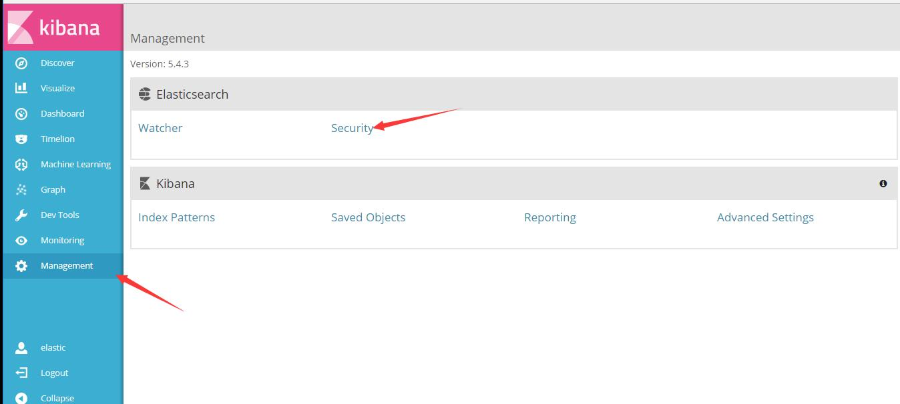
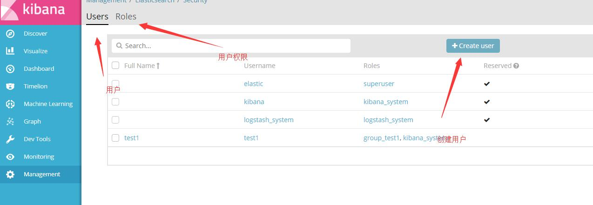
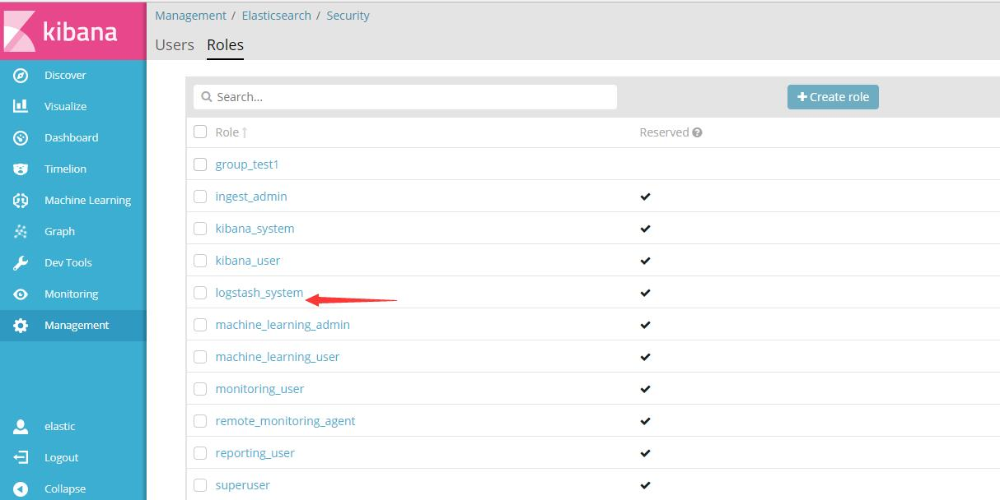
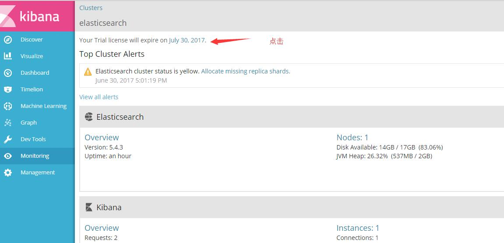
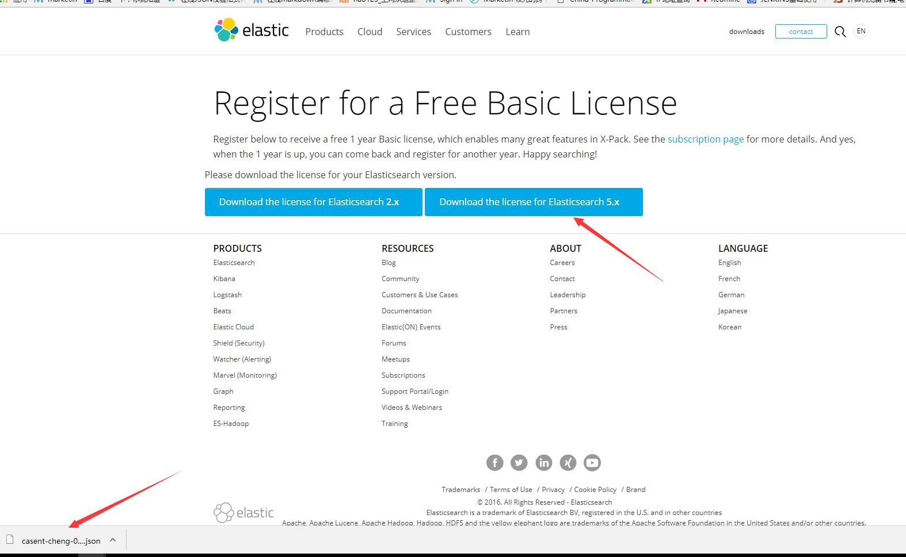

为解决elk用户权限捆绑和服务监控的问题，我们可以安装x-pack插件，该插件能够很好的解决这两个问题。
安装x-pack
Elasticsearh安装x-pack（如果是集群，每台机器上都要安装）
cd /usr/share/elasticsearch/
bin/elasticsearch-plugin install x-pack再按两次“y”
Kibana安装x-pack
cd /usr/share/kibana/
bin/kibana-plugin install x-packlogstash安装x-pack
cd /usr/share/logstash/
bin/logstash-plugin install x-packx-pack安装好后启动后就可以访问了，有一个超级用“elastic”,密码是“changeme”,有所有权限。
可以在web页面上添加用户和权限组，也可以用API。
名词解释：
user：创建的用户名字。 role：用户被分到哪个role组就有哪些权限，权限就是通过role进行控制


系统自带了很多权限组，可以点击查看自带的组有哪些权限。 
如果我们需要新加一个用户，可以把他放到 “superuser”组。
修改超级用户的密码
curl -XPUT -u elastic 'localhost:9200/_xpack/security/user/elastic/_password' -H "Content-Type: application/json" -d '{ "password" : "123456"}'
修改普通用户密码
curl -XPUT -u elastic 'localhost:9200/_xpack/security/user/kibana/_password' -H "Content-Type: application/json" -d '{ "password" : "123456"}'
创建role
curl -XPOST -u elastic 'localhost:9200/_xpack/security/role/events_admin' -H "Content-Type: application/json" -d '{ "indices" : [ { "names" : [ "events" ], "privileges" : [ "all" ] }, { "names" : [ ".kibana" ], "privileges" : [ "manage", "read", "index" ] } ] }'
创建user
curl -XPOST -u elastic 'localhost:9200/_xpack/security/user/johndoe' -H "Content-Type: application/json" -d '{ "password" : "userpassword", "full_name" : "John Doe", "email" : "john.doe@anony.mous", "roles" : [ "events_admin" ] }'
当我们安装好x-pack之后，x-pack插件就会定时采集监控数据到web页面，并提供了可视化图片。
可以直观的看到数据，缺点就是不能发邮件报警。





再更新证书
curl -XPUT -u elastic 'http://localhost:9200/_xpack/license' -H "Content-Type: application/json" -d @casent-cheng-0d5aef40-c59f-4575-a7a1-7fcda571cb29-v5.json
curl -XPUT -u elastic 'http://localhost:9200/_xpack/license?acknowledge=true' -H "Content-Type: application/json" -d @casent-cheng-0d5aef40-c59f-4575-a7a1-7fcda571cb29-v5.json
每年要更新一次。
Edit By MaHua